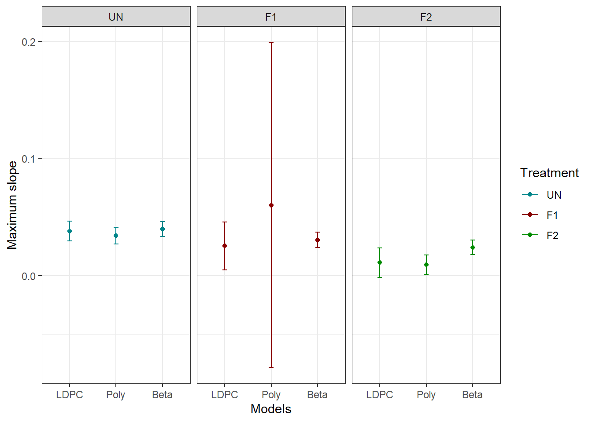
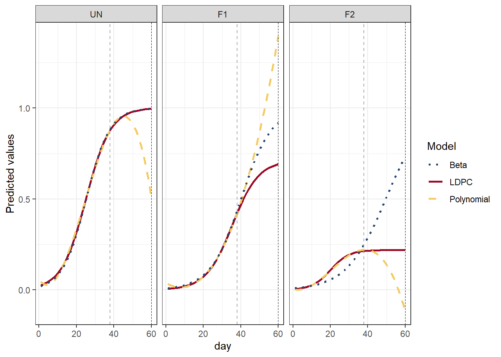

Chapter 6 Discussion
6.1 How the results change?
LDPC was the only method that allowed us to check the epidemic meaningful parameters \(K\), \(y_0\), and \(r\).
Beta and polynomial regression do not have parameters directly related to the epidemic process (biologically meaningful) as the LDPC.
We calculated similar derived quantities across methods, let’s check then together.
Inflection points:
| Der.Q | Trt | LDPC | Poly | Beta |
|---|---|---|---|---|
| y_inflection | UN | 0.5009371 | 0.5022986 | 0.5 |
| y_inflection | F1 | 0.3559040 | 1.3948893 | 0.5 |
| y_inflection | F2 | 0.1094307 | 0.1139722 | 0.5 |
The inflection of a logistic is bounded between \(y_0\) and \(K\). When \(y_0\) represents the disease level at \(t = 0\) (approximately 0), ensuring \(y0 < K/2\), the inflection happens at \(K/2\).
The inflection of the polynomial regression has no bounds and is determined by the estimated coefficients, it is not constrained by the time of observation or the response range.
The inflection point is determined by the choice of link function and predictor. With a logit link and a linear predictor, the inflection occurs at \(\mu = 0.5\). These two components determine the trajectory shape. Additionally, the conditional mean is bounded within (0, 1) given the support of the Beta distribution.
- Notice something important: The inverse logit (our \(\mu\)) is the same function as the logistic regression:
\[\frac{1}{1 + e^{-(\beta_0 + \beta_1x_i)}}\]
Why not compare inflection in x? We could, but recall the polynomial regresion:
- We assumed that the inflection for F1 was at x = 60, bounding it between 0 and 60, but we can’t know for sure once the function is convex (happy face).
| trt | x_inf | max_s | y_inf | se | max_s_ci.ub | max_s_ci.lb |
|---|---|---|---|---|---|---|
| UN | 24.69112 | 0.0339961 | 0.5022986 | 0.0036146 | 0.0410807 | 0.0269114 |
| F1 | -42.66029 | 0.0599295 | 1.3948893 | 0.0707342 | 0.1985686 | -0.0787096 |
| F2 | 20.63571 | 0.0092756 | 0.1139722 | 0.0041679 | 0.0174446 | 0.0011066 |
Maximum slopes:

For treatments such as “UN” and “F2”, where the data show clearer patterns, the three modeling approaches produce very similar estimates of maximum slope.
Comparing beta regression and the LDPC, the second shows greater uncertainty. This may reflect differences in model structure, the LDPC estimates three parameters that jointly determine the trajectory and maximum slope, whereas the beta regression with a linear predictor has a simpler mean structure.
\[Slope_{max, \ LDPC} = \frac{Kr}{4} \\[10pt] Slope_{max, \ Beta} = \frac{\beta_1}{4}\]
Derived quantities can be more sensitive to model choice than the curves themselves!
For F1, where the data provide considerably less information about the trajectory, uncertainty in the polynomial maximum slope becomes very large. The flexibility and lack of biological constraints of the polynomial allow this uncertainty to propagate strongly into the derived quantity.
Predicted curves and prediction for day 60:

LDPC is constrained by \(K\), the curve stop growing and approaches the maximum potential at that point (slope = 0);
The beta regression is constrained between 0 and 1 by the assumed distribution, coupled with the inverse logit, it produces this sigmoidal shape that increases toward 1.
The polynomial regression is unconstrained, and higher orders can be very flexible. Within the observed range it behaves similar to the LDPC, but outside the observed range it produces nonsense trajectories.
Important note:
LDPC: If \(r = 0\), the curve stays at \(y_0\), if \(r <0\), the curve decreases toward zero.
Beta regression: In the response scale, If \(\beta_1 = 0\), the curve stays at \(\beta_0\), if \(\beta_1 < 0\), the curve decreases toward 0.
6.2 Summary
| Point of discussion | Logistic DPC | Polynomial regression | Beta regression |
|---|---|---|---|
| Distribution adopted | Normal (Assumed) |
Normal (Assumed) |
Beta |
| Mean trajectory | Logistic DPC equation | Cubic polynomial | Link scale: Linear Response scale: Inverse logit |
| Mean boundaries | 0 and \(K\) | No boundaries | 0 - 1 bounded |
| Upper asymptote | \(K\) | None - the sky is the limit! | 1 |
| Direct inference from model parameters | Yes | Generally no | Link scale: Yes Response scale: Maybe |
| Works well for extrapolation/forecast | Yes | No | Maybe Approaches 0 or 1 |
| Constant slope | No | No | Link scale: Yes Response scale: No |
| Main strength | Epidemiologically interpretable trajectory | Flexible description | Appropriate support + bounded mean |
| Feasibility | Could be complex to fit, especially when data is sparse, best option for extrapolation. | Easy to fit compare to LDPC, will yield good results within observed range. | Easier and most straight forward option, especially if focusing on inference at link scale. |